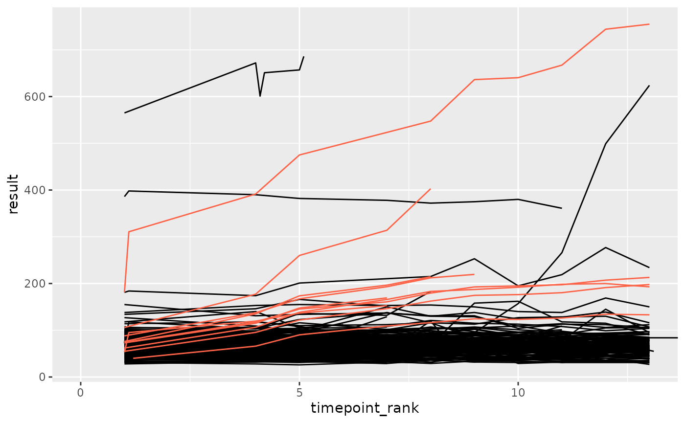

autocorr
autocorr.Rmd
library(ctasval)
#> Loading required package: dplyr
#>
#> Attaching package: 'dplyr'
#> The following objects are masked from 'package:stats':
#>
#> filter, lag
#> The following objects are masked from 'package:base':
#>
#> intersect, setdiff, setequal, union
library(ggplot2)
library(tidyr)Comparing Different Approaches for Introducing Autocorrelation to Clinical Measurements
-
anomaly_autocorruses a sinus function -
anomaly_autocorr2always adds a fraction of the lag value to the current value
set.seed(123)
df_prep <- prep_sdtm_lb(pharmaversesdtm::lb, pharmaversesdtm::dm, scramble = TRUE)
df_filt <- df_prep %>%
filter(parameter_id == "Alkaline Phosphatase")
# with this wrapper functions will always generate an anomalous site with the same patients
set_seed <- function(fun, seed = 1){
fun_seeded <- function(...) {
set.seed(seed)
fun(...)
}
}
plot_anomaly <- function(df, fun, anomaly_degree, seed) {
fun_seeded <- set_seed(fun, seed)
df_anomaly <- fun_seeded(df, anomaly_degree = anomaly_degree)
ggplot(df, aes(x = timepoint_rank, y = result, group = subject_id)) +
geom_line(color = "black") +
geom_line(data = df_anomaly, color = "tomato") +
coord_cartesian(xlim = c(0, max(df_anomaly$timepoint_rank)))
}
plot_anomaly(df_filt, anomaly_autocorr, anomaly_degree = 0.7, seed = 3)
plot_anomaly(df_filt, anomaly_autocorr2, anomaly_degree = 0.7, seed = 3)
Compare Autocorrelation Values
get_autocorr <- function(df, fun, anomaly_degree) {
fun_seeded <- set_seed(fun)
df_anomaly <- fun_seeded(df, anomaly_degree = anomaly_degree)
df_anomaly %>%
filter(! is.na(result)) %>%
summarise(
autocorr = ctas:::calculate_autocorrelation(result),
n = n(),
.by = subject_id
) %>%
mutate(
autocorr = ifelse(n <= 2, 0, autocorr)
)
}
get_autocorr(df_filt, anomaly_autocorr, anomaly_degree = 0.7)
#> # A tibble: 3 × 3
#> subject_id autocorr n
#> <chr> <dbl> <int>
#> 1 sample_site-01-708-1272 0.847 5
#> 2 sample_site-01-709-1424 0 2
#> 3 sample_site-01-716-1308 0.977 4
df_grid <- tibble(
anomaly_degree = list(seq(0, 1, 0.1)),
fun = list(anomaly_autocorr, anomaly_autocorr2),
fun_name = c("anomaly_autocorr", "anomaly_autocorr2")
) %>%
unnest(anomaly_degree)
df_autocorr <- df_grid %>%
mutate(
autocorr = purrr::map2(fun, anomaly_degree, ~ get_autocorr(df_filt, .x, .y))
) %>%
unnest(autocorr)
df_autocorr %>%
ggplot(aes(as.factor(anomaly_degree), autocorr, fill = fun_name)) +
geom_boxplot() +
theme(legend.position = "bottom")
Autocorrelation of a Sinus Function


Conclusion
anomaly_autocorr2 which adds a fraction of the previous
values increases the autocorrelation more than
anomaly_autocorr which uses a sinus function.
ctas:::calculate_autocorrelation only uses lag 1. Even
when considering other lags a sinus function will not increase the
autocorrelation above ~ 0.6